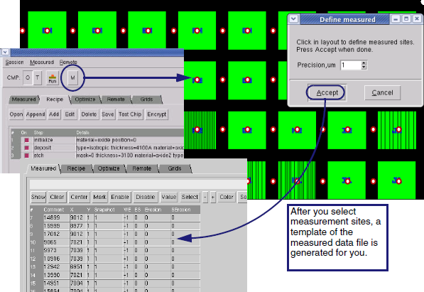

You can create
a process recipe file in Calibre WORKbench based on the information
about the manufacturing process. This method is recommended as the
GUI checks each command after entry.
Prerequisites
Calibre
WORKbench and Calibre CMP Model Builder licenses.
Information
about the manufacturing process such as materials, thicknesses,
and process times.
Procedure
- Start Calibre WORKbench at
the command prompt with the following command:
- If you have a test chip layout,
load it using .
Optimization only runs on flat
layouts. If the layout is hierarchical, you will be prompted to
flatten it before running actual simulation.
- In Calibre WORKbench, go to to
display the CMP Model Builder window.
- Select the Recipe tab to start building
the process recipe file.
- Define the layout window to
be used for simulations with the initialize command.
- In the Recipe tab, click Add to show a dropdown menu.
Select initialize. The Initialize
dialog box appears. (See Figure 1.)
- In the dialog box, specify
the material for analysis. You can type a material or use the scroll
arrows to the right of the field; they cycle through typical layer
types.
- Specify the initial position
of the layer stack. The default is 0 angstroms.
- To use only a portion of the
layout for simulation and test measurements, draw a selection rectangle
around the region in the Calibre WORKbench main window. In the Initialize
dialog box, click Use Selection.
The dialog box adds fields showing the X and Y positions. These
values are filled into the process recipe file.
- Click OK to
create the initialize command in your process recipe file.
Figure 1. Initialize Values
for the First Run
- Begin building the recipe
file with your parameters used in manufacturing.
Click the Add button and select deposit to add layers of dielectric
and nitride. Input the thickness and material names and the deposition
method used in your manufacturing flow. Do not use the same material
name as was used in the initialize command.
Tip You can
specify any name for a deposited or etched layer in your fabrication
process. Be sure to use the same material name in subsequent steps
that affect the layer or the simulator may return incorrect values.
This is one means of protecting your process-related intellectual
property.
Figure 2. Deposition Values
for the First Run
- Define etch steps.
Click the Add button and select etch to define the etching
process step. Define the type of etch (isotropic or anisotropic),
material, and the etch depth (Thickness field) used in your flow.
At this point you have two
options on how to proceed. Use method 1 if you have your own layout
that you want to use for simulation and if you already have thickness measurements
for your chip. Use method 2 if you do not have a test chip and want
to define one in CMP Model Builder with the define_mask command.
Method 1: Using
your own layout for simulation and measurements
This method assumes that you
have test chip measurement data (thickness, dishing, and other data)
for the layout. This allows you to see exactly how CMP and other processes
factor into how devices are formed.
Specify
the layer in your own layout to simulate. Enter this layer number
in the Mask field.
In
Calibre WORKbench, select the measurement sites to generate the
measured data file. Place sites on both areas with shapes and those
with no shapes close by. (You can adjust positions later.)
Figure 4. Method
1 (continued)
A template for your measured
values is created in the Measured tab.
Method 2: Using
the define_mask command to generate a mask
The define_mask command is
used in CMP Model Builder to create test structures that will be
produced in your fabrication facility. Taking measurements for the measured
data file is required to complete this flow.
Enter
a Mask1D or Mask2D name for your new set of test patterns (Figure 5). This will be created for you in Calibre
WORKbench. The Mask1D or Mask2D dialog box automatically appears
when you click OK in
the Etch dialog box.
Specify
your spacing, width, and density values for the test pattern. Click OK.
The Block width and height
should be significantly larger than the Array width and height to
allow for a non-trench, or field, region.
To learn more about the differences
between Mask1D and Mask2D, see “define_mask 1D” and “define_mask 2D”.
On
the Recipe tab in the
CMP Model Builder window, click Test
Chip.
The Test Chip dialog box (Figure 6) streamlines the process of creating
a measured data file by creating a template for you. Define the
output and the name of the new measured data file (Output Measured
File field).
Figure 6. Method 2 (continued)
- Define deposition of barrier
layer and copper seed layer.
Click the Add button and select deposit to define deposition
of the barrier layer. Define the thickness, material name, and type
of deposition for your manufacturing flow.
- Define ECD steps for copper
bulk layer formation.
Click the Add button and select deposit. In the Deposit dialog
box, select Electroplating. (See Figure 7.) Enter a model name.
After clicking OK, the
EcdModel dialog box appears for you to declare the ECD model parameters.
(See Figure 8.)
The Snapshot field is filled
in automatically if measured data is available at the end of this
step. Snapshots are used to identify the process step with the correct
data set. If your measured data file has 100 thickness values for
electroplating, they are synchronized with this ECD command for
tracking purposes.
Clicking OK finishes the ECD model.
It appears in the process recipe file as define_model.
- Now do the same (define models
and call them) for CMP. Each polishing stage, or platen, must have
its own model definition. For three platens, use three CMP calls
and three define_model commands. The “Process Recipe File Example” has examples of model declarations
for platen 1 (bulk copper removal), platen 2 (copper clear/soft
landing), and platen 3 (TaN barrier removal and overpolish).
- To define
the CMP model, click the Add button
and select cmpModel.
You must specify the model name and material. The other fields you
plan to simulate should have symbolic names. (For example, SPad
as $SPAD rather than a number.)
- To call the CMP model, click
the Add button and select cmp. For the Model field, provide
the name given in the CmpModel dialog box.
- Save the session file ()
to use it in subsequent steps.